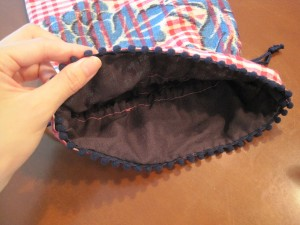
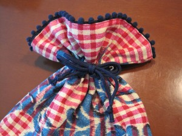

シューズ入れ写真１
フラメンコのレッスンに、ダンスのレッスンに意外と売ってないのが、シューズ入れ。フラメンコシューズは釘があるし、重みもあるので、裏地をしっかりと張ったのが便利です。
ダンススタジオのアルディエンテのオーナーさんに了承が得られたら、今度置かせてもらおうかな、と思っています。

大好きなボンボリ？をつけました。

結んだところ
一目ぼれした生地を使いました。生地は裏地と共にとてもしっかりしています。

お祭り用ティアラ
納涼祭には、フラメンコで出させてもらうので、今年はお店出せないなあ、残念だなあと思っていたら、会長さんから電話がかかってきて、「去年の出店リストみてたら、猪子さんの名前あったから電話してみました。良かったら、出して欲しい」とのこと。それで、急遽家族が店番で、出展させてもらうことに・・・。
去年は、フリマ、手作り石鹸、アクセサリーで出展したところ、子供用の指輪がすぐに完売。あとはぼちぼちだったので、そうときまれば、子供用のアクセサリーだな！と子供用のティアラ、指輪、ネックレスと作ってみました。
ちょっと飽きてきたところで、ワイヤーがなくなり・・・そうだ！と娘が幼稚園で作ってきた、素敵な色合いの粘土ネックレスを作ってみたいと思い立ち、材料を買いに行きました。
娘に「どうやって粘土に色つけるの？どのくらい混ぜるの？」など聞きまくり、ネックレスではなく、オーナメントにしたらいいな、リボン付けたらもっとかわいいとアレンジを加えて作ってみました。

おもちゃマカロン、オーナメント用粘土ビーズ
作り方は本当に簡単ですから、お子さんがいらっしゃる方なんか、一緒にやってみると楽しいですよ！
①かるい紙粘土に水彩絵の具をねりこんで、お団子状に丸めます。
②竹串にみたらし団子のように突き刺していく。乾くまで、そのままにする。
③紐に、かわいた粘土ビーズと、ストローを切った物を交互に通す。最初は玉結び。最後は、適当に引っ掛けられるように丸い形にひもをむすぶ。リボンを好きなところにむすんでできあがりです！！
ついでにビーズやラメマニキュアでデコったおもちゃマカロンやドーナツ、タルトも作ってみました。たのしーー（＾０＾）！！
水彩絵の具を練りこんだだですが、発色が何とも言えないかわいらしい色合いになりました。ただ原色を混ぜるだけでかわいらしい色になるから、不思議！！子供たちが喜んでくれたらいいなあ。

大人の魅力！景子さん

シギリージャを素敵に踊っていた柴崎ちゃん

初参加の素敵な一色さん

かっこいい！！シュリちゃん

みんなのお姉さん、谷川さん

キュートなまさみちゃん
阿波座駅からすぐのdining cafe ｍarthaにて、18時半より昨夜POR DIOSの生徒自主ライブが行われました！メンバーはPOR DIOSの生徒だけでなく、色々な教室の生徒さんも参加できるライブになっていて、毎回とても刺激的です。辻川輝先生が、スペイン留学に行く間の恒例行事になっていて、POR DIOS の講師、谷川さんが主催してくださっています。昨日で第3回目を迎えましたが、回を重ねるごとに皆の上達ぶりを感じるし、何よりも、外部の生徒さんを交えてという初回からの谷川さんのアイディアがとてもいいんだと思います。お客さんもたくさん見えて、大盛況でした！私もとても楽しませて頂きました！みんなみんなお疲れさまでした！そして、ありがとう！
ビューティーダンサーズ

色っペフタキちゃん
素敵なアレグリひろみちゃん

ビッグに撮っちゃった！！

小粋なガロティンみほちゃん
まず、ディスプレイとおうちの素敵さにびっくり！本当におしゃれで、普段生活されているおうち？と思うほどでした。
プリザーブドフラワーは、実際あまり見たことがなかったのですが、造花とは全然違う、お花のみずみずしさ、しっとり感がありますね・・・。以前ちょっとテレビで見たのですが、プリザーブドフラワーは一度真っ白に脱色してから、好みの色に色づけできるそうなので、作品にもよりますが、中には、生花とも違うアンティークっぽい色彩で独特の雰囲気を感じるものもありました。作品ひとつひとつ、とても丁寧にきれいに作られており、心を込めて作ってらっしゃるんだなあと感じました。色使いも優しい感じで、どんな年齢のどんな方にも喜ばれそうで、プレゼントにもぴったりです。私は、髪につけられそうな、白いお花をふたつ頂きました。母も一緒にお邪魔したのですが、母は小さなグリーンのお花がついたリースと白いかわいい鉢に入ったピンクのバラをプレゼント用に頂きました。その日、oneday lessonもあったそうです。次回も楽しみです！！
最近フラメンコというより、ちょっとエキゾチックな雰囲気の大人っぽいアクセサリーが自分が欲しいなあと思い、一日で三つ作りました。近日アップしますね！もちろんイヤリングにもできます。エキゾチックカラーピアス、￥2800

エキゾチックカラーピアス

エキゾチックカラーピアス着用
アフリカンなボーンビーズピアス￥2300

アフリカンなボーンビーズピアス

アフリカンなボーンビーズピアス着用
しずくフリンジピアス￥2700

しずくフリンジピアス

しずくフリンジピアス写真2
今年流行のマキシ丈のワンピースなんかに合いそうです。どれもおしゃれ度アップ間違いなしですよ！

お昼ごはん
娘と二人だったので、娘リクエストの“クリームのパスタ”と生地から作った（あらかじめ作って冷凍しておいた）ピザ生地に、庭で育てているバジルを自分流に怪しげな配合で作った（汗）ソース、たまねぎとチーズを乗せて作ってみました。
バジルソースは本当に市販のようなきれいなグリーンではなく、きたなーい茶色になっていたので、ほんまに美味しいんやろうかと、なかば投げやりに作ったのですが、焼けてくると、あれ？いいにおい？
ちゃんとバジルのにおいしてるなあなんて。
実際食べてみると、思ったより美味しかったです（笑）。
クリームパスタも野菜たっぷりで、生クリームなしでも美味しかったです（冷蔵庫の大掃除）。
今日も鷹尾会館（けやき自治会館）でサークルのメンバーと、来る８月７日の納涼祭に向けてセビジャーナスの練習をやっていました・・・。
3月から全然フラメンコ経験のない方達とちょっとずつやってきましたが、１番と２番をほぼ踊れるようになりました！パチパチ！
５０代６０代の方が組んで何とか踊れるくらいまでになったんですよ！思い返してみると、私自身超初心者の頃４ヶ月やそこらで2番までできてたかなあと思います。Nさんなんて、２番を教え始めてすぐの時に、構成がなんとなく分かったなんて、言われました。さすがですよね。頭でもちゃんと整理できてらっしゃるんだなあと関心しました。
皆が一生懸命なので、こちらはもっとがんばって楽しく丁寧に指導できるようにがんばらないとね！とりあえず、納涼祭に向けては皆が主役なので、盛り立てて行きたいです。
それはさておき、活動日の木曜は、なぜか木曜は雨の日がめちゃくちゃ多い・・・今年の3月から活動していますが、今のところ8割以上が雨（汗）。
きっと私以外の家族に雨男か雨女がいるからに違いない！！私ではありませんよ（笑）。

{kind=link}
{kind=link}
{kind=link}
{kind=link}
{kind=link}
{kind=link}
{kind=link}
{kind=link}
{kind=link}
{kind=link}
{kind=link}
{kind=link}
{kind=link}
{kind=link}
{kind=link}
{kind=link}